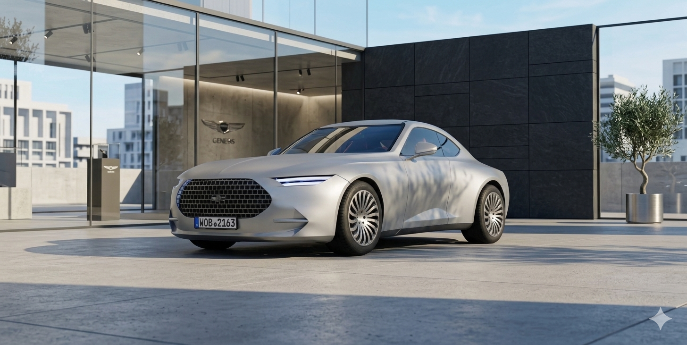

Pure Form
Notice how the top navigation automatically adapted its color to contrast.
Function Priority
No borders, no shadows. Just typography and whitespace.

Notice how the top navigation automatically adapted its color to contrast.
No borders, no shadows. Just typography and whitespace.